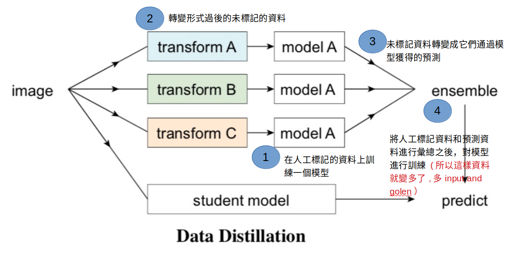

Concept
有點像是data augementation的感覺
從未標記資料產生的新知識，能夠用來改善模型。為此，
必須將原本的人工標記資料，和自動標記資料合併，再用合併後的資料來訓練
主要思想是用通過使用一個在大量已標記資料上訓練過的模型在未標記資料上生成annotations，
然後再將所有的annotations（已有的或者新生成的）對模型進行重新訓練
Data Distillation 資料蒸餾主要包括4步：
- (1)首先在人工標記的資料上訓練一個模型；
- (2)將(1)中訓練好的模型運用到各種轉變形式過後的未標記的資料；
- (3)將(2)中得到的未標記資料轉變成它們通過模型獲得的預測；
- (4)將人工標記資料和預測資料進行彙總之後，對模型進行訓練。
